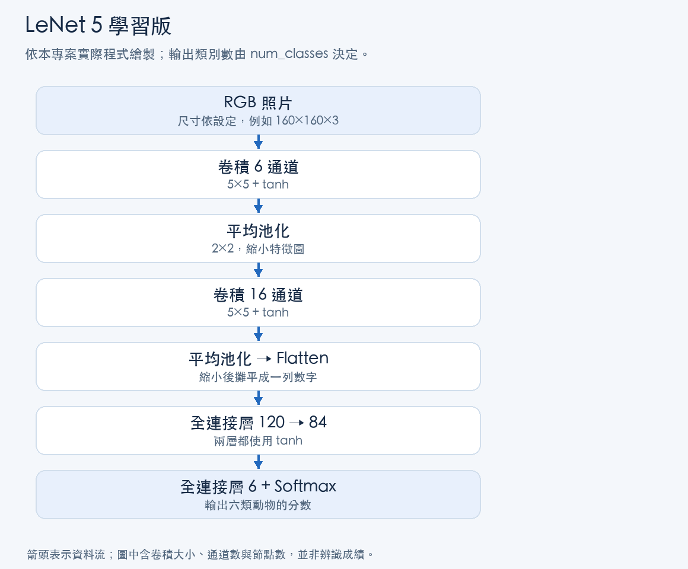
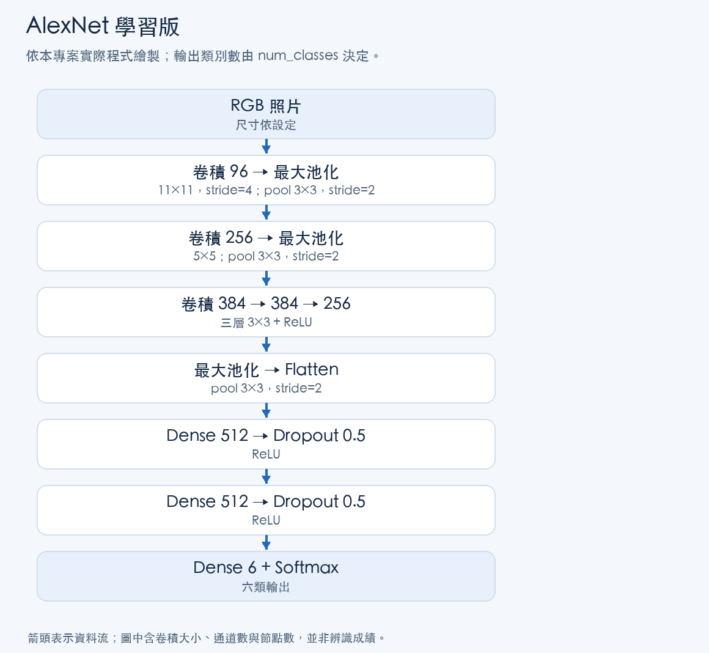
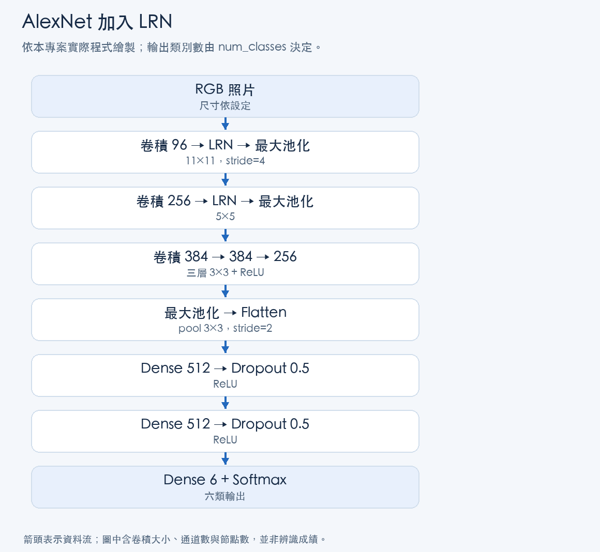
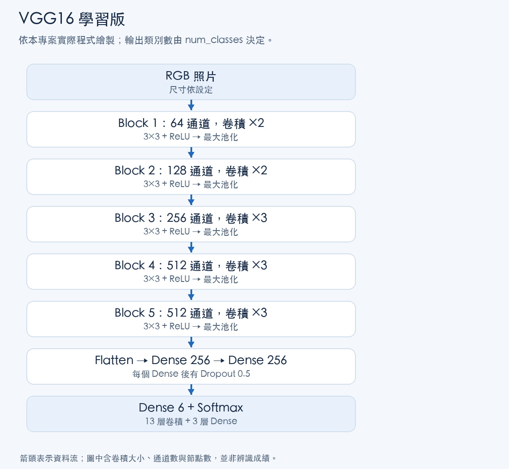
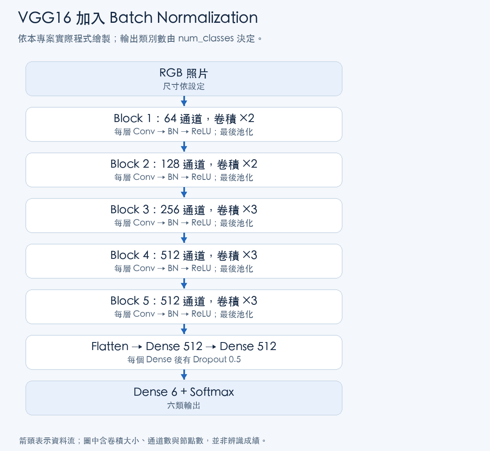
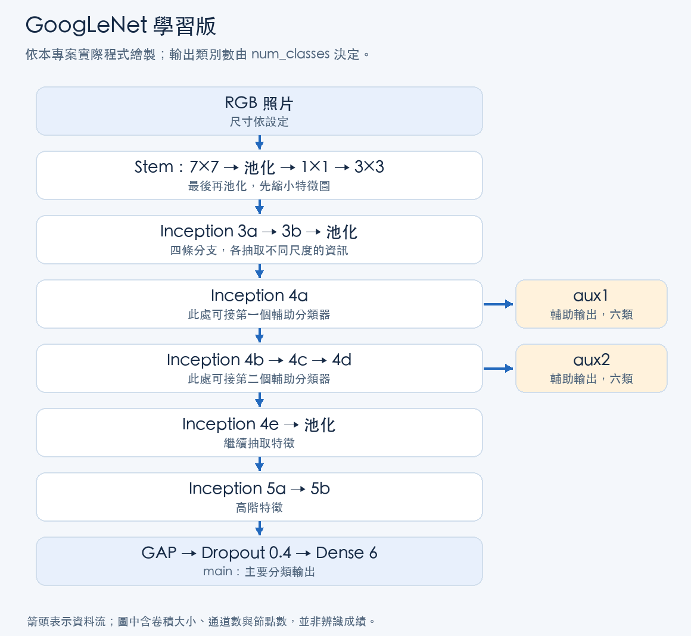
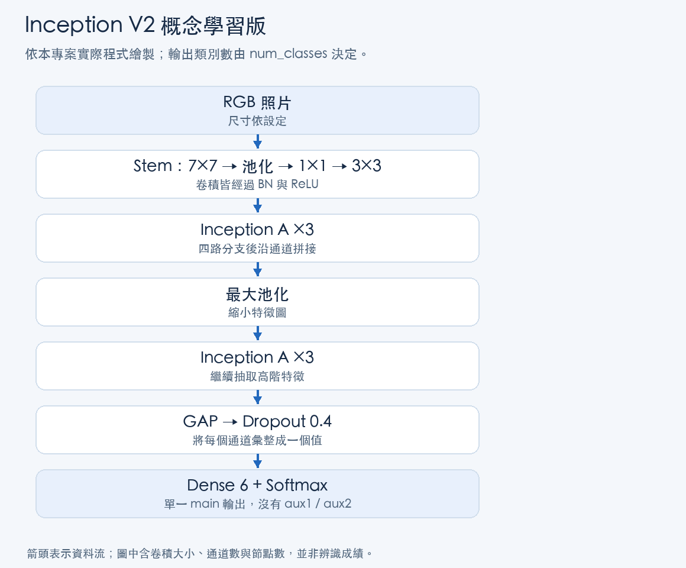
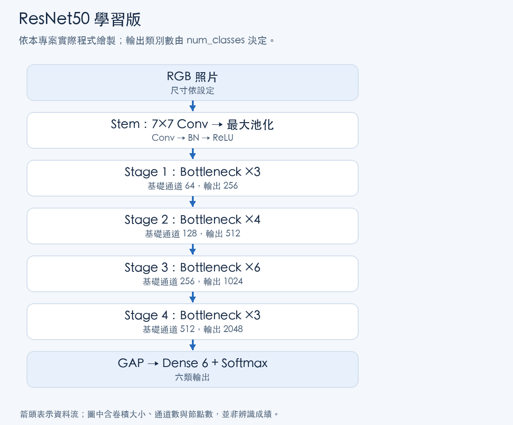
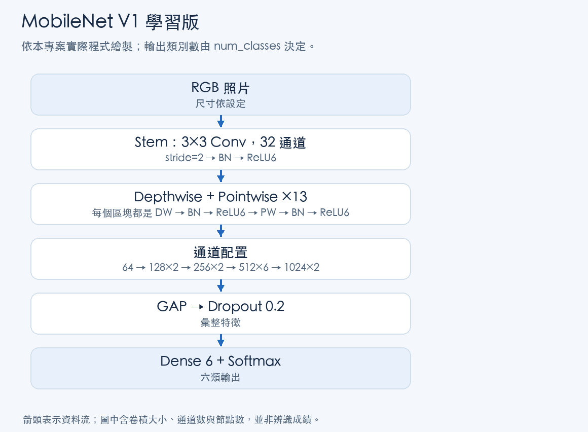
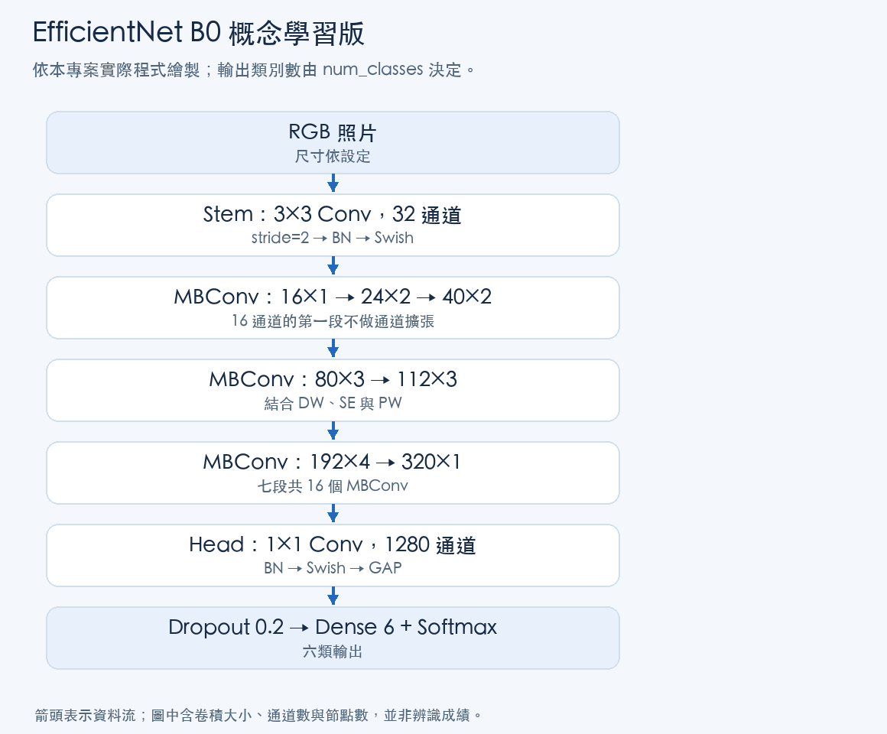

十種學習實作：理解核心設計，再觀察相同資料下的訓練差異。所有模型依六類分類任務調整，部分架構有簡化。
模型特色與論文架構差異 · 回專案首頁
小型卷積與平均池化，作為入門基準。

查看模型程式
大卷積核、ReLU 與 Dropout。

加入局部反應正規化，與無 LRN 版本對照。

連續堆疊 3×3 卷積。

加入 Batch Normalization；分類器大小也與本專案 VGG16 不同，並非只差 BN。

Inception v1 多分支、1×1 降維與輔助分類器。

BN、多分支、卷積分解與降採樣。

Bottleneck 與殘差捷徑。

Depthwise 與 Pointwise 卷積，降低計算量。

MBConv、SE 通道權重與條件式殘差。
